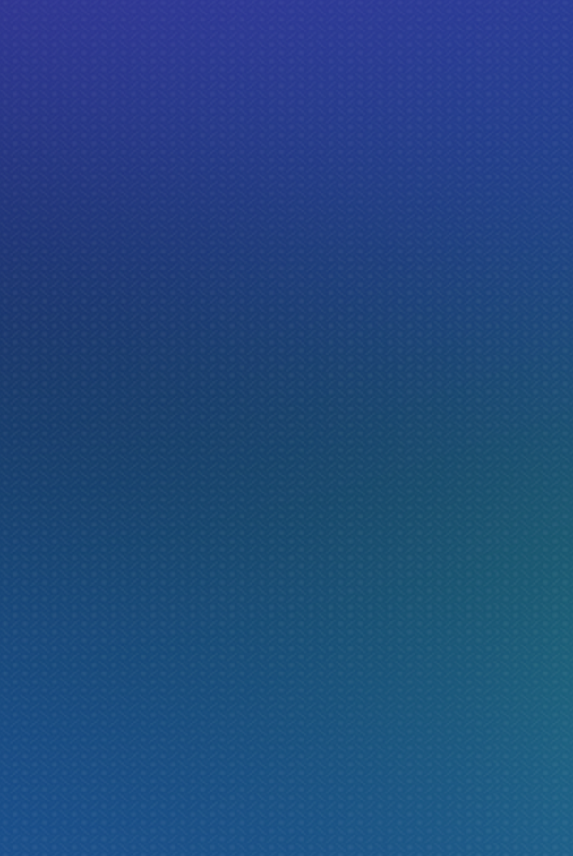

<ons-page>
  <ons-toolbar modifier="opacity">
    <div class="left">
      <ons-back-button>Retour</ons-back-button>
    </div>
    <div class="center">En construction</div>
  </ons-toolbar>

  <div class="app-page">

<div class="details-content glass">
    <div class="welcome">
      <p class="subtitle">EN CONSTRUCTION</p>
    </div>
    <div class="blur">
      
    </div>
  </div>

  <svg version="1.1" xmlns="http://www.w3.org/2000/svg">
   <filter id="blur">
     <feGaussianBlur stdDeviation="10" />
     </filter>
  </svg> 
     

  </div>

</ons-page>  